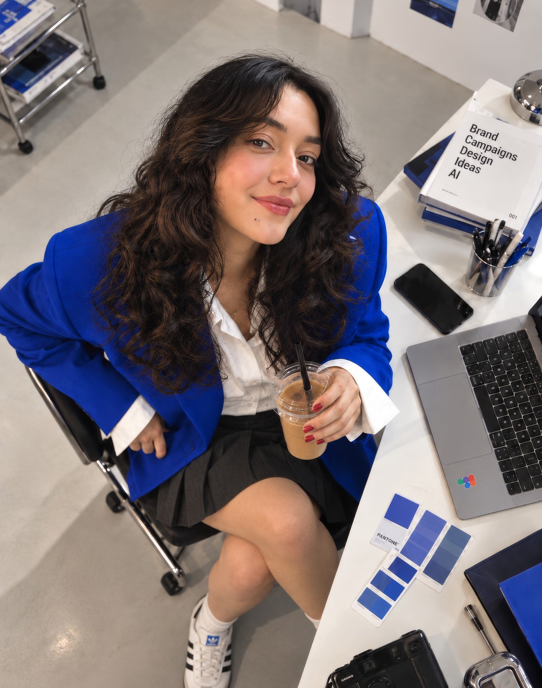

✦
selected
selected
projects
(Three projects · brand, growth and AI systems)
⁘(Priya Rawal — Senior Design Manager)
Eight years across consumer tech, D2C and global markets — currently leading design for Cars24 Australia.

(Brands I’ve designed for)
(Three projects · brand, growth and AI systems)
⁘(Who am I)
(© 2026 Priya Rawal)